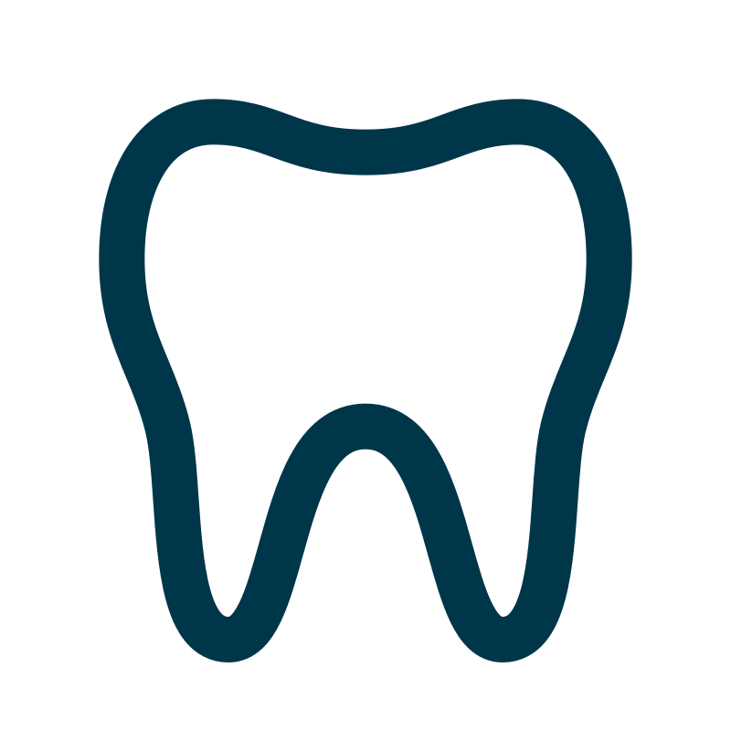

Tutto ciò che facciamo avviene nella nostra clinica odontoiatrica. Durante la tua prima visita,
ti faremo una radiografia e una TAC. Il medico ti fornirà quindi un piano di trattamento
dettagliato.
In base alle condizioni del paziente, possono essere utilizzati i seguenti trattamenti:
Impianto dentale singolo:
In questi casi, quando mancano solo uno o due denti, non è necessario preparare un ponte e
limare i denti sani.
Ponte su Impianti dentali:
In caso di mancanza di un molare, al posto della protesi parziale mobile è possibile preparare
una sostituzione fissa, cioè un ponte, più comodo e maneggevole rispetto alla sostituzione
mobile.
TUTTI SU 4, TUTTI SU 6:
Il concetto di trattamento All-on-4/6 è stato sviluppato per fornire ai pazienti edentuli un
restauro efficiente ed efficace utilizzando solo quattro impianti per supportare una protesi per
l’arcata completa a carico immediato.
OVERDENTURE:
Un'overdenture è una protesi supportata da impianti, quindi rimane stabile e in posizione.
Offre un sorriso naturale che ti permette di mangiare, ridere e sorridere comodamente senza la
preoccupazione che la protesi si muova. Un'overdenture può in definitiva migliorare la qualità
della vita di una persona agendo come un dente naturale.
Dopo la successiva fase di recupero viene posizionata la protesi dentale, che ora sarà forte e
utilizzabile come un dente sano. Il processo operatorio sicuro e raffinato, che ormai è
diventato una routine. Le moderne attrezzature e l'esperienza di diversi anni offrono quasi il
100% di sicurezza per il successo dell'impianto dei denti.
GUIDA INTELLIGENTE
LA CHIAVE PER UN RESTAURO DI SUCCESSO
Smart Guide è una soluzione digitale di fascia alta che consente al tuo dentista di eseguire la
pianificazione e il posizionamento perfetti del tuo impianto. Il dentista può pianificare in
anticipo il vostro caso digitalmente su un computer in circostanze rilassate.

COME SUCCEDE?
La soluzione più avanzata per la sostituzione dei denti. In questa clinica hai la possibilità di richiedere la pianificazione 3D e il trattamento implantare guidato con le più moderne tecnologie.
CHIRURGIA GUIDATA
Secondo un piano esteticamente e anatomicamente corretto, una guida chirurgica specifica per
il paziente garantisce che gli impianti siano nella posizione perfetta.
VANTAGGI DELLA TECNOLOGIA SMART GUIDE
Diagnostica moderna
Il trattamento inizia con l'immaginazione 3D di alta qualità
I rischi indesiderati e le complicazioni dell'impianto dentale a mano libera possono essere
ridotti con una pianificazione precisa e la sua realizzazione accurata.
Tempi chirurgici più brevi
Grazie alle preparazioni avanzate e alla guida chirurgica specifica per il paziente, il tempo
alla poltrona può essere ridotto a una frazione.
Meno dolore e disagio
La chirurgia guidata offre la possibilità di un trattamento quanto più minimamente invasivo
possibile. In molti casi significa niente suture e meno dolore.
Nessuna procedura aggiuntiva
Osservando e utilizzando la maggior parte dell'anatomia data, nella maggior parte dei casi è
possibile evitare procedure costose e rischiose.
Nell'insieme SMART Guide offre un trattamento preciso, stimabile e sicuro minimizzando i
disagi dell'intervento.
IL PROCESSO DI TRATTAMENTO CON SMART GUIDE
Consultazione
Il vostro dentista vi informerà sui dettagli del trattamento.
Diagnostica 3D
Viene realizzata un'immagine TAC delle vostre strutture anatomiche nella zona dei denti mancanti per visualizzare
l'osso e la gengiva.
Pianificazione computerizzata del trattamento
Il dentista pianifica il trattamento in un ambiente rilassato. Grazie al software
all'avanguardia è possibile pianificare la forma, la dimensione e la posizione perfetta
dell'osso, considerando le strutture anatomiche circostanti come il nervo o i seni
nasali.
Posizionamento dell'impianto
L’intervento viene eseguito tramite una guida chirurgica individuale. La guida
garantisce che gli impianti vengano posizionati nella posizione prevista e garantisce
inoltre il minor disagio possibile del trattamento.
Restauro protesico
Il tuo dentista potrà preparare il lavoro protesico ideale sui tuoi impianti, grazie alla loro perfetta posizione.
Innesto osseo
Dopo l’estrazione di un dente si verifica una perdita ossea attorno alle radici. Guarisce, ma
se non viene inserito un impianto nel posto del dente mancante, l'osso inizia a recedere.
Dopo una carie o giù di lì, il livello osseo diventa molto più basso che nelle altre parti della
bocca. Se mancano più denti la recessione ossea è maggiore. Se un paziente indossa una
protesi, la perdita ossea è ancora maggiore, soprattutto se indossa una protesi metallica. Per
posizionare un impianto nell'osso abbiamo bisogno di un'altezza e una larghezza definite
dell'osso. Se è debole, non è possibile mantenere gli impianti in posizione, oppure possiamo
danneggiare nervi e vasi importanti che si trovano nell'osso. Siamo in grado di migliorare la
qualità dell'osso con diversi metodi.
OPERAZIONE DI RIALZO DEL SENO CON L'UTILIZZO DI MATERIALE DA
INNESTO OSSEO ARTIFICIALE:
Si tratta di un'operazione con la quale riusciamo a rinforzare l'osso nella regione dei molari
superiori. Dopo aver aperto la parete inferiore della caverna del seno, il chirurgo vi
inserisce uno speciale osso artificiale granulato. È possibile inserire contemporaneamente
anche gli impianti. Se l’osso è ancora più debole nella regione dei molari superiori, il
paziente necessita di un’operazione più grande per rendere l’osso idoneo all’impianto.
OPERAZIONE DI BLOCCO OSSEO CON BLOCCO OSSEO RETROMOLARE:
Eseguiamo queste operazioni presso la nostra clinica. C'è un medico anestesista che effettua
l'anestesia generale per il paziente. Durante l'intervento il medico preleva i frammenti ossei
dalla parte verticale della mandibola e li ricolloca nella parte orizzontale della mandibola.
Questa operazione di solito funziona quando il paziente ha bisogno di più osso nella
regione inferiore.
Impianto
L’implantologia dentale è un campo speciale dell’odontoiatria che utilizza la protesi dentale
come metodo per sostituire gli spazi tra i denti. L’obiettivo è sempre il successo della
riabilitazione dentale dei pazienti. Durante l'impianto vengono inseriti materiali inorganici nei
tessuti dell'osso mascellare. I denti impiantati da soli o come base fissa possono sostituire gli
spazi dentali singoli o multipli del paziente.
PERCHÉ È BUONO?
La mancanza di denti permanente, la masticazione con gomme da masticare danneggiano il
tessuto osseo sottostante con la pressione costante, stimolando così l'assorbimento osseo.
Nemmeno le placche dentali ostacolano questo dannoso processo. Il tempo che intercorre tra
la perdita dei denti e l'impianto è un fattore molto importante per i pazienti con gap dentale,
perché la struttura ossea disponibile ne determina il successo. La mancanza di denti
compromette il nutrimento, non possiamo masticare bene e danneggia l'intero organismo.
Alterazioni avverse, processi di declino si verificano nelle mascelle e nelle articolazioni:
l'altezza delle mascelle diminuisce, il viso si affloscia, le rughe si approfondiscono. I denti
cercano il contatto con le loro paia di masticatori e con i denti vicini. Quindi, se per esempio
ci manca il sesto dente inferiore, il sesto superiore si solleva lentamente ma inesorabilmente
dal letto dei denti, e a lungo termine potremmo perdere un altro dente. Poiché la sfortuna non
viene mai da sola, il settimo dente dietro il sesto mancante cade in avanti. . È ovvio quanto sia
importante insistere sui nostri denti, ma se è necessario estrarli, sostituirli il prima possibile.
L'impianto è realizzato in titanio, che ha la caratteristica vantaggiosa di impedire il declino
osseo.
Sorveglianza dello Stato di Salute
Il medico che effettua l'impianto si informa innanzitutto sullo stato di salute generale del
paziente e sulle sue pretese. Viene eseguita un'esatta impronta del gesso e una radiografia
panoramica del luogo previsto. L'igiene orale richiesta, il buono stato di salute e la struttura
adeguata dell'osso mascellare, dove deve essere inserito l'impianto, sono essenziali per
l'impianto dei denti. Con l'aiuto di questi si possono valutare le condizioni anatomiche,
tenendo conto della struttura ossea disponibile è possibile scegliere la forma e la dimensione
migliore per l'impianto dentale.
Durante il colloquio il paziente viene informato sui risultati degli esami, sui suggerimenti, sul
calendario delle cure da effettuare, sui possibili fattori di rischio e sulla loro prevenzione. Il
paziente viene inoltre informato sulle possibilità, quanti impianti può indossare, cosa deve
fare prima e dopo l'intervento. Il piano definitivo viene elaborato insieme al paziente.
Seguendo le indicazioni del medico e grazie all'attenta pianificazione e all'ottima tecnica
operatoria il rischio di rigetto è minimo e può verificarsi solo raramente.
Operazione
L’intervento chirurgico degli impianti avviene solitamente in anestesia locale. Applichiamo il
pretrattamento medicinale e, se necessario, l'abbattimento con ossido di azoto. Durante
l'impianto, dopo la preparazione all'operazione, le parti molli che ricoprono l'osso mascellare
vengono accuratamente separate e la sede dell'impianto viene formata nell'osso. La
preparazione delle filettature garantisce il fissaggio adeguato, ad esempio nel caso di impianto
a vite. Questo è seguito
Una settimana dopo l'intervento, tolti i punti di sutura, gli impianti potranno ricoverarsi
tranquillamente nell'osso, sotto la protezione della mucosa. La ferita chiusa durante
l'intervento fornisce un ambiente sterile per un agevole recupero del tessuto osseo attorno
all'impianto, sotto la gengiva. Il recupero dell'osso dura generalmente tre mesi nella mascella
inferiore e sei mesi in quella superiore. Successivamente, nella seconda fase, l'impianto viene
rilasciato dalla mucosa e al suo interno viene inserita una vite di recupero, che
successivamente fungerà da portante della testa dell'impianto nella cavità buccale. Se lo si
desidera, è possibile indossare un impianto temporaneo durante il recupero.
Dopo il necessario tempo di distensione le corone degli impianti vengono posizionate. Dopo
poco tempo viene presa un'impronta. L'odontotecnico la utilizza per preparare un campione
per la sostituzione del dente. L'inserimento del dente è compito del dentista.
A proposito di titanio
I materiali utilizzati per l'impianto devono soddisfare requisiti molto severi. Devono essere
compatibili con i tessuti viventi, non devono avere effetti velenosi, allergici o maligni e non
devono corrodersi. Devono avere la flessibilità, la resistenza alla trazione, la portata e la
resistenza all'abrasione richieste. Devono essere ben sterilizzabili e facili da lavorare. Una
parte dei materiali disponibili è costituita da metalli o leghe, come il titanio. Grazie al suo
strato esterno di ossido è abbastanza stabile e ha un'elevata energia esterna, quindi è in grado
di unirsi con diverse molecole e proteine, con le quali le strutture proteiche del tessuto osseo
possono successivamente unirsi. Ecco come avviene il fissaggio osseo dell'impianto. Oltre a
quelli sopra menzionati, il suo più grande vantaggio è che previene la carie delle ossa, cosa
inevitabile dopo la perdita di un dente.
Cosa puoi aspettarti?
L'impianto è un intervento chirurgico. In caso di ansia può essere alleviata con farmaci
sedativi-rilassanti e l`intervento risulta indolore con l'uso dell'anestesia. L’impianto di uno o
due elementi comporta la stessa difficoltá dell’estrazione di un dente. In caso di piú
L`impianti contemporanei o se il paziente è fortemente ansioso, ci sono altre possibilità.
Trattare e alleviare il disagio dei pazienti ansiosi diventa sempre più importante.
Secondo un sondaggio condotto dall'Istituto dei dentisti tedeschi, il 75 per cento degli
intervistati ha ammesso di avere poca o media paura prima dei trattamenti odontoiatrici. Il
15% ha ammesso grande paura. Gli intervistati hanno inoltre ammesso che oltre alle sindromi
ben note (brividi, battito cardiaco intenso, onde di sudorazione), hanno paura di entrare nel
panico, avere forti dolori; perdita di autocontrollo, nausea o possibile svenimento.
Molte persone si vergognano così tanto dei loro denti cariati che la loro autostima, già ridotta
a causa della situazione imbarazzante, diminuisce ancora di più. Quindi ridere o socializzare è
impossibile per loro. È molto difficile, se non impossibile, per il paziente uscire da solo da
questo circolo vizioso. È ancora più difficile perché in pubblico è ancora un tabù. Cerchiamo
di aiutarti. Il primo trattamento avviene dopo aver dato consigli speciali.
Controllo
L'inserimento in bocca del sostituto dentale impiantato non pone fine al rapporto tra paziente
e medico. Una delle condizioni più importanti per il successo della sostituzione dei denti
impiantati è il mantenimento della pulizia della bocca, occorre un'adeguata igiene orale e un
controllo dentale regolare. Il paziente deve presentarsi ad un esame di controllo di solito una
volta all'anno. Quindi ci assicuriamo che l'impianto sia nella giusta posizione.
Tutto sull'anestesia
Ossido di azoto, sedazione con gas esilarante
Si tratta di una rinascita di un vecchio metodo, poiché l'ossido di azoto veniva utilizzato per la
sedazione in vari campi della scienza medica nel 19° secolo. La situazione è la stessa con
l'odontoiatria. È consigliato soprattutto ai pazienti ansiosi, poiché oltre ad essere un
analgesico, l'ossido di azoto dissolve la paura. Negli Stati Uniti e in molti altri paesi, come la
Gran Bretagna, l'Australia e i paesi scandinavi, oltre il 50% dei dentisti utilizza l'ossido di
azoto durante i trattamenti.
Come funziona l'ossido di azoto?
Anche una piccola quantità di ossido di azoto inspirata attraverso una piccola maschera nasale
ha un effetto considerevole. Il senso di sollievo e la diminuzione dell'ansia creano un facile
stato di trance, durante il quale il paziente è cosciente ed è in grado di comunicare con il
medico e rispondere a domande, fare gargarismi, ecc. Il riflesso della deglutizione rimane,
quindi può deglutire. . Non dovrebbe aver paura di tali situazioni; gli effetti collaterali non
appariranno. Il senso di sicurezza sostituisce la paura e l'ansia, e puó essere aumentato con
una musica rilassante attraverso gli auricolari. Questo stato è chiamato ipnosi del piacere.
Insieme alla paura scompare anche il dolore, per cui l'iniezione analgesica non può causare
alcun disturbo al paziente. Per la prima volta applichiamo la minima quantità possibile di
medicinale, che sicuramente ha un effetto sedativo. Successivamente aumentiamo
gradualmente la dose fino a raggiungere la completa assenza di dolore. Il dosaggio dipende
dalla capacità del paziente di sopportare il dolore; se avverte dolore durante il trattamento,
può farsi iniettare l'anestetico ogni volta che lo richiede, poiché il medico è in grado di
controllare in qualsiasi momento la miscela di ossigeno e ossido di azoto. Dopo il trattamento
il paziente respira ossigeno puro per altri cinque minuti, finché l'effetto dell'ossido di azoto
scompare. In questo modo il paziente può lasciare lo studio in tutta sicurezza, dopo il
trattamento.
Pretrattamento medicinale
Preparare i pazienti con i farmaci significa calmare la psiche e dissolvere la paura. Con l'aiuto
di questi, i sentimenti negativi indesiderati del subconscio possono essere ridotti prima dei
trattamenti.
Quando lo applichiamo?
Lo applichiamo nei casi in cui abbiamo a che fare con un paziente ansioso, soprattutto se sono
previsti forti conati di vomito e nausea. Viene utilizzato anche nel caso di pazienti che hanno
già avuto o sono predisposti a diverse malattie (disturbi cardiaci e circolatori), o se la loro
limitata capacità di cooperazione lo richiede.
Anestesia locale
L'anestesia locale ci permette di eseguire esami e trattamenti senza dolore, mentre il paziente
è assolutamente cosciente. L'anestesia locale ostacola l'espansione degli stimoli dolorifici;
allevia e dissolve la sensibilità al dolore, alla temperatura e al tatto, per un certo tempo.
Campo di applicazione:
Si applica in caso di piccoli e medi interventi su bocca, denti, mascella e viso, dolore acuto,
cronico e interventi dolorosi e diagnostici.
Sedoanalgesia
Con l'iniezione di analgesici e farmaci sedativi attraverso la vena siamo in grado di isolare il
centro del dolore del paziente, creando così uno stato calmo e di sonnolenza. Allora possiamo
evitare che si creino paure, ma possiamo proteggere il cuore e i polmoni dallo stress fisico,
che può essere causato dall'angoscia e dall'ansia. Il paziente è assolutamente cosciente e
respira da solo durante il trattamento. Per raggiungere lo stato indolore applichiamo
l’anestesia locale.
Quando lo applichiamo?
Lo applichiamo quando il paziente è estremamente timido, ansioso o quando le sue malattie
precedenti (disturbi cardiaci e circolatori) sarebbero stressanti fisicamente.